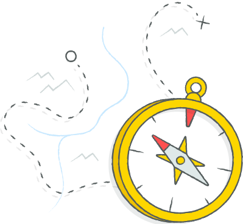

Scientists need help
They’re searching the microscopic world for answers to our biggest problems, but it’s hard to know where to start. That’s why many use computer simulations to point them in the right direction, just as explorers rely on maps to find their way.
Finding answers is tough, and without more computers, doing scientific research can be a bit like exploring with an incomplete map